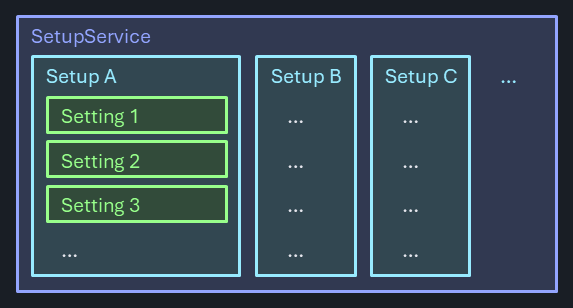
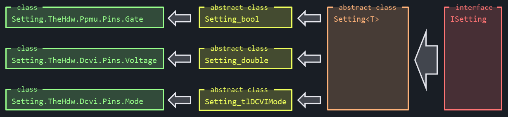
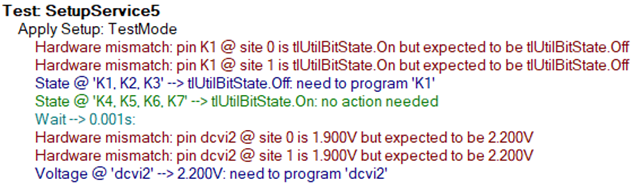

Setup Service
Much of the test coverage of typical devices can be achieved with only a handful test methods, which are applied with varying parameters. What's typically very specific to a device and test solution however is the required setup to execute such tests.
The SetupService provides a generic solution for defining, applying and verifying the correct setup for tester, interface hardware and device. It offers means to manage setups, built-in logic for efficient use as well as auditing and diagnosis capability.
Problem Statement
"Managing tester, interface hardware and device setups is a common challenge for test solutions. It gets in the way of common code, adds overhead to test programs, a significant test time optimization burden and can be the source of hardware reliability problems if not done correctly. The diverse nature of various possible setup aspects makes a generic solution tricky."
Traditional Approaches
The problem isn't new, and so are the various attempts that have been made to address it.
Fully Specify All Setups
A safe path may seem to fully specify all setup requirements for all tests. Aside from bloating the test program, this approach can add significant overhead to execution - even applying the same settings like programming an instrument to the same output voltage, will cost test execution time.
Trying to add parameters to standardized test methods that allow for flexible pre-setup options (like utility bits to switch on & off, digital hold states, preconditioning patterns, instrument connects, ...) quickly becomes overwhelming - too diverse are the options that may exist.
Incremental Setups
Partly alleviated is that problem with test methods that are designed for an incremental approach: in a series of similar tests the correct setup would only have to be applied once and could then be reused. Only the setup part would be device specific, while the actual tests can be generic and avoid any overhead caused by redundant setups.
Unfortunately such an approach makes the test sequence highly susceptible to changes further up in the flow and issues introduced by sequence changes. Problems may show up in completely unrelated areas of the test program, and identifying the correct place for a fix might be tricky.
Another downside is the lack of explicitness. Users unfamiliar with the test program may find it difficult to determine which setup is applied and if it's the correct one.
Overall, this approach defies basic principles of modularity and separation of concerns.
Full Setups for Debug, Incremental for Production
Combining the two may seem like the best of two worlds, with full support for flexibility in a debug scenario and a tailored & efficient solution for production. An if(!production) { ... } statement would enclose those settings that are not required in an optimized flow.
As it turns out, maintaining two scenarios often causes increased maintenance effort, which is often given up as production needs tighten. The two different paths through the test programs start to diverge, quickly to a point where the debug option isn't usable anymore.
Default Setups
Agreeing on a common set of conditions that's good for most of the tests can limit the overhead. Once implemented, all tests would be assume that setup to be applied as they start. Any deviations they need from that they could apply, but would have to make sure to revert before they end. Violations may not be easy to locate, but once isolated, are straight-forward to fix.
In reality however, agreeing on such a common setup may be difficult depending on the device / interface / setup complexity. Parameters without a clearly dominating state would still require lots of switching, which in case of relays may result in increased hardware wear impacting system reliability.
None of the concepts above suit well for common library based test methods, as they trade-off customization needs with execution performance.
The Smart Way
All the described ideas above try to optimize for a certain scenario at the cost of the other. The SetupService resolves that by combining them and using logic to find the most efficient way transparently for the user.

Named Setups
Named setups are defined and centrally maintained for a specific test program. To apply a setup, it is only required to provide the identifier, and the service will know what do to. Participating test methods can use a single string type argument simplifying the idea of commonly usable library functions, as the specific setup aspects are encapsulated in a generic container.
This concept is consistent with how levels and timing context is handled, they also combine a variety of different conditions under a single identifier.
Setups can be defined in code or may be read in from separate setup files (JSON) once before validation.
Versatile Settings
A setup is a collection of settings, which follow a common structure while offering the most versatile functionality:
- Feature - the instrument / DIB / device feature it controls.
- Pins - the pin names this setting applies to (if any).
- Value - the setting value. Strictly and specifically typed (like
doublefor a force voltage setting ortlUtilBitStatefor an utility bit state). - Set delegate - the code required to apply this setting to the instrument / DIB / device
- Read delegate - the code required to retrieve the actual setting state from the instrument / DIB / device. Optional - may not always be possible.
Different values for the same feature on different pins are realized by the creation of dedicated settings. These are implemented by following a strong interface implementation / inheritance model. Common functionality is provided centrally & generically and shared with the specific implementation. This avoids copy / paste or consistency issues, admittedly at the slight cost of a non-trivial implementation:

Fully Specified, Incrementally Applied
The setups retain a cached state per feature, so that they can determine if a setting needs to be re-applied or not. Incremental & partial setups are supported, and the logic is smart enough to only apply the minimum needed to the system. Settings that are defined for multiple pins will on-the-fly determine the subset of pins that require a change, pins already programmed to the target value are omitted and the remaining ones are programmed in a single statement. If all pins are at the target value already, no programming statement is issued.
Audit Mode
Determining the deltas to be programmed is made efficiently by comparing the target setting with cached values. No expensive hardware reads are performed for that. If however, settings are modified by bypassing the cache, the mechanism would break.
To detect that, an Audit Mode is available. Once enabled, actual hardware reads are performed to confirm caches' correctness as the test program executes. Identified violations are reported.
Note
For certain instrument settings, comparing driver readback against the cache isn't trivial. The reason may be cal factors being applied, quantization effects or instrument ranges automatically picking the next available hardware range on arbitrary inputs. Using tolerances and instrument / feature specific logic for the comparison would be unreliable and error prone.
The DoubleReadCompare feature adds a different compare strategy to these settings. In AuditMode, the driver value is read back twice, first as-is and then again after re-applying the target value. In case both reads match, the expected value was obviously already present in the hardware. Otherwise the cache was out of sync - regardless of how the value is altered on the way when being sent to that specific driver node.
The implementation of this feature is transparent to the user and automatically applied for those settings in SetupService that require it.
The Audio Mode is intended to be used prior to releases or correlation runs, since the hardware readback adds significant overhead. Audit Mode runs could be required by process or enforced in dev-ops pipelines.
Resolve a Cache Conflict
Three ways exist to resolve a cache conflict:
- Manually Revert the changed setting at the end of the test method. This option is preferred if the setting is rather unique in the program.
- Change the code to apply the setting via an additional Setup instead of manually. Setups can be small and incremental, and multiple can be applied within a test method.
- Notify the SetupService about the change by calling the static method
.SetCache()on any setting. Only the cache is being updated without interacting with hardware.
Important
In case of cache conflicts, it's critical to apply the resolution within the offending test. Otherwise a dependency between tests would be created, and changing the sequence or adding other tests in-between could break the model.
Confirm the System is in the Expected State (Future Enhancement)
Some users have asked for a way to confirm a specific setup at the moment a measurement is being made or a pattern is started. This is to make sure that no critical condition is altered after incremental edits to released test programs and rounds of test time optimizations. This check would only compare the hardware state with the expectation and report any deviations, and also be run per request as part of a release process.
Such a feature ("TCM - Test Condition Monitor") had been requested by multiple customers in the past independently from a SetupService, but the infrastructure could support both use cases easily.
Validation (Future Enhancement)
The Validation feature of the SetupService ensures the integrity and correctness of user-defined setups. During the validation process, the service performs the following checks:
- Pin Existence: Verifies that all pins specified in the setups are defined on the pinmap sheet.
- Instrument Type Consistency: Ensures that within each setting of a setup, all referenced pins belong to the same instrument type.
- Value Range Verification: Confirms that all specified values, where possible, are within the acceptable ranges of the setting.
- Duplicate Setup Detection: Identifies and flags duplicate setups to prevent redundancy.
Use Model
Assume the case where two different instrument parameters need to be controlled via setups: utility bits and DCVI force voltages. Defining a first setup in code could be done by:
Defining Setups
Setup normal = new("Normal");
normal.Add(new Csra.Setting.TheHdw.Utility.Pins.State(tlUtilBitState.Off, ["K2", "K3", "K5", "K6"]));
normal.Add(new Csra.Setting.TheHdw.Utility.Pins.State(tlUtilBitState.On, ["K1", "K4", "K7"]));
normal.Add(new Csra.Setting.TheHdw.Dcvi.Pins.Voltage(0.990, ["dcvi1"]));
normal.Add(new Csra.Setting.TheHdw.Dcvi.Pins.Voltage(2.850, ["dcvi2", "dcvi3"]));
Services.Setup.Add(normal);
In this example, a Setup called Normal is created. Certain utility bits are specified to be Off, while others need to be On. Two different voltage levels are defined for the three DCVI pins dcvi1, dcvi2 and dcvi3.
In the same way, a second setup called TestMode is created with different settings.
Setup testMode = new("TestMode");
testMode.Add(new Csra.Setting.TheHdw.Utility.Pins.State(tlUtilBitState.Off, ["K1", "K2", "K3"]));
testMode.Add(new Csra.Setting.TheHdw.Utility.Pins.State(tlUtilBitState.On, ["K4", "K5", "K6", "K7"]));
testMode.Add(new Csra.Setting.TheHdw.Dcvi.Pins.Voltage(2.2, ["dcvi2"]));
Services.Setup.Add(testMode);
Note
Setups don't have to be "complete" or "consistent" with others. Like the TestMode setup only cares about the voltage on dcvi2 but ignores both dcvi1 and dcvi3.
Adding a specific setting to a setup means that the given values only relate to the pins listed. Other pins or other features don't matter here and are neither touched nor concerned.
Applying Setups
Within a test method, setups can easily be applied:
[TestMethod]
public void Services.Setup1() { // Test #1
Services.Setup.Apply("Normal");
// do some DUT testing
}
In verbose mode, the Services.Setup.Apply() is chatty, reporting to the output window what it did:
All defined settings of the setup Normal are applied in the specified sequence. For the first setting (turn utility bits off), no actions are needed as they are off already.
Note
After a post-job-reset, most instrument parameters are reset to a known default state. For settings resembling tester instrument features, the SetupService is aware of these defaults and automatically updates (resets) it's caches at the beginning of a test program run.
Now lets's assume the next test in our example requires the setup TestMode to be applied:
[TestMethod]
public void SetupService2() { // Test #2
Services.Setup.Apply("TestMode");
// do some DUT testing
}
Only the differing settings are being sent to the hardware:
If the third test now calls for the same setup TestMode:
[TestMethod]
public void SetupService3() { // Test #3 (reusing same setup)
Services.Setup.Apply("TestMode");
// do some DUT testing
}
no more action is needed - all settings are already where they need to be and no hardware programming is done:
The fourth case performs some direct hardware modifications before re-applying setup TestMode again:
[TestMethod]
public void SetupService4() { // Test #4 (same setup, but some hardware changed)
TheHdw.Utility.Pins("K1").State = tlUtilBitState.On;
TheHdw.DCVI.Pins("dcvi2").Voltage.Value = 1.9;
Services.Setup.Apply("TestMode");
// do some DUT testing
}
Now the cache is confused as it didn't get notified of the hardware state changes made behind it's back. It still believes no action is needed:

However, when using Audit Mode to re-apply setup TestMode:
[TestMethod]
public void SetupService5() { // Test #5 (audit mode finds such changed)
Services.Setup.AuditMode = true;
Services.Setup.Apply("TestMode");
// do some DUT testing
}
the discrepancies are detected and flagged:

Applying Multiple or Combining Setups
Users may decide to group related settings in separate setups, and then apply multiple to get the tester / device / interface hardware into the desired state. This may help with maintainability and reduce the total number required when combinations are needed.
The method Services.Setup.Apply() accepts a list of comma separated values, which are applied in the specified sequence. Redundant or conflicting settings (Gate off and then on again in a subsequent setup) are executed as specified, because it could be the intention of the author to preserve that order, for instance to apply a device reset.
Side Effects and Other Aspects
In IG-XL, persistently stored data causes cross-process communication overhead when running in blue button debug mode: the data has to be serialized to keep the DRH and the Excel process in sync. IG-XL automatically takes care of that, but a design focusing on minimum required data volume and simple structures helps minimize the impact.
A looming risk of features that bury complex functionality under the hood and expose an "always and automatically do the right thing" use model is debuggability. Designed for the "Happy Day Scenario", it may get tricky for users to trouble-shoot and figure out what's going on if things don't play out as intended. The verbose mode should provide valuable insight in such cases, but additional debug features may need to be considered as users run into challenges or identify additional requirements.
Certain events happen throughout the life-time of an IG-XL job, which the SetupService must reliably tie in to: settings need to be initialized once and will need retain it's information with the life-time of the job. A post-job-reset will affect instrument settings, which the SetupService cache has to get notified off. A robust design here is essential for reliable functionality under all conditions.
Finally, more formal report outputs may be desired for the audit mode feature. Customer engagement will help identify requirements, but the design is open and extensible for additional functionality.
Supported Features
The selection of features is made based on priority and relevance for typical test programs. A brute-force code reflection based query of all existing nodes in the IG-XL driver language is difficult due to complexity (~800 nodes for DCVI alone), redundant and convoluted language implementation.
Detailed information on the supported features per instrument and their implementation strategy is shown on the following pages. The structure closely follows the IG-XL driver language, with a separate table per base node (the SetupService is platform specific)
- DCVI instrument nodes
- DCVS instrument nodes
- Digital instrument nodes
- PPMU instrument nodes
- Utility instrument nodes
The required types for the settings use there are listed here:
Note
The per instrument catalog does not reflect a final state - functionality is added on a by-need basis. This is a work-in-progress area.
Implementation
A conceptual description of the implemented code will follow (https://github.com/TER-SEMITEST-InnerSource/cs-reference-architecture/issues/689).
Unit Testing
The core functionality of the SetupService has far-going unit test coverage. However - designed for an open and extensible use model - unit test coverage for those extensions is required as well. For consistent coverage, the following strategy is defined:
Setting_Xyz : Setting<Xyz>Serialize()- enums: test all, invalid (cast)
- numeric types: test corner cases (-maxneg, small neg, 0, happy day pos, maxpos)
string: normal, large, veryvery large, string.empty, null, (Unicode? No)bool:true/false
Compare()- equal, smaller, larger
- corner / special, tricky cases
Feature : Setting_Xyz- Constructor
- all args find their way to the object?
- initstate set, unit, settling and initMode set ---> really?
SetAction/ReadFuncdefined?_staticCacheconnected?
SetAction- set corner cases from above and read back via test harness
ReadFunc- set happy day via SetAction IG-XL / readback ---> set another happy day / readback
Set- set happy day / readback --> set another happy day / readback
- check cache
- Constructor
Alternatives Considered
n/a
Open Questions
- likely should integrate with the
Pinsobjects. But that'll cause a dependency. Is that what we want? Implications? - add validation support. Bounds checking might be possible. Should we propose defining the setups at validation? Prior to that?
- add site capability (different values per site for scenarios where that is needed)